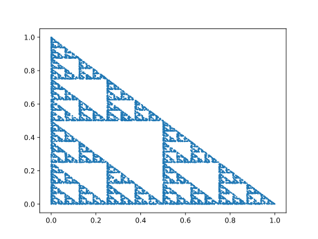
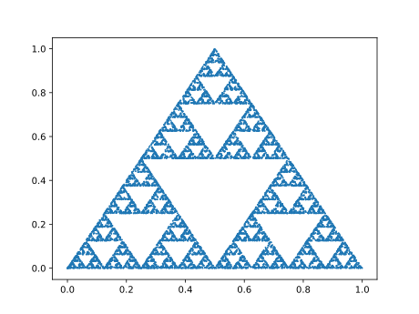
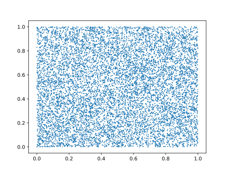
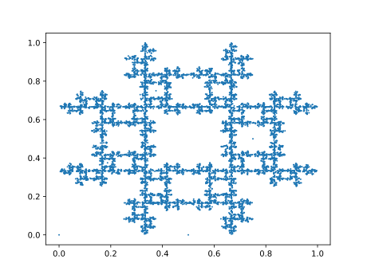

HW3b: The Chaos Game (15 Points)
Due Monday 2/28/2020
Overview / Logistics
The purpose of this assignment is to get you practice with loops and functions in a fun, visual application. This is the IDS 301/Python version of the CS 173/Java assignment, so you may want to talk to some people in CS 173 about the logic as you're working through this.
What to submit: When you are finished, you should submit Triangle.py to Canvas, along with answers to the following as a comment on Canvas:
- Did you work with a buddy on this assignment? If so, who?
- Are you using up any grace points to buy lateness days? If so, how many?
- Approximately how many hours it took you to finish this assignment (I will not judge you for this at all...I am simply using it to gauge if the assignments are too easy or hard)
- Your overall impression of the assignment. Did you love it, hate it, or were you neutral? One word answers are fine, but if you have any suggestions for the future let me know.
- Any other concerns that you have. For instance, if you have a bug that you were unable to solve but you made progress, write that here. The more you articulate the problem the more partial credit you will receive (fine to leave this blank)
The Problem
Fractals are beautiful mathematical shapes which are self-similar, which means they are made up of smaller parts of themselves. Many shapes in nature are approximately fractals. Take a fern, for example. As shown below, it's possible to make a fern out of smaller ferns which are rotated, translated (moved), and scaled, but which are otherwise exactly the same. And those smaller ferns, in turn, are made up of even smaller versions of the exact same fern:
In this assignment, you will be making another type of fractal by simulating a probabilistic game known as the chaos game. This game consists of choosing some points on a polygon, and then drawing a bunch more points on the inside of that polygon by following a bunch of random steps. As such, it is a great assignment for exploring loops.
Sierpinski Triangle (15 Points)
In this assignment, you will make a fractal called the Sierpinski Triangle. You will start with three points on the 2D Cartesian plane that form a triangle. These are parameters that you will send into a void function which does the drawing. Each point has both an x and a y coordinate, so the points are
- a = (ax, ay)
- b = (bx, by)
- c = (cx, cy)
- First, draw the point a, and designate this as the last point drawn
- Randomly choose a point that's either a, b, or c. Draw a point halfway in between the last point drawn and this randomly chosen point
- Repeat step 2 for until the chosen number of samples has been drawn.
Numerical Example
As an example, consider the triangle with points a = (0, 0), b = (1, 0), and c = (1, 1). Here are the points we draw
- As always, we first draw a
- Let's say the next randomly chosen point is c. We'd draw our second point halfway in between a and c, which is at (0.5, 0.5).
- Let's then say the next point chosen is b. We'd draw the third point halfway in between (0.5, 0.5) and b = (1, 0), which is at (0.75, 0.25).
- Let's then say the next point chosen is c again. We'd then draw the fourth point halfway in between (0.75, 0.25) and c = (1, 1), which is (0.875, 0.625) .

Code To Write
You create a file called Triangle.py, and within this file, you should define a function called draw_sierpinski which takes 4 parameters: the three points on the triangle, and the number of points to draw
This function takes in the x and y coordinates of 3 points on the triangle, as well as the number of points we aim to draw. To generate a random number that's either 0, 1, or 2, you can use the code
You can use this to help you choose the next reference point that's either a, b, or c (if and elif statements will help here). Below is what the output should look like for a couple of different calls to your function if it is working properly. You can copy and paste these lines after your function, and you should see the result below
Code Example 1

Code Example 2
Here's another example of code you could run, followed by the result

Tips
-
To take the average of two points
pandq, which are numpy arrays, you can simply type0.5*(p+q)
Extra Credit: Quad Fractal (+1.5 Points)
For extra credit, you may draw another fractal using points on a quadrilateral with points a = (ax, ay), b = (bx, by), c = (cx, cy), and d = (dx, dy). The steps are very similar to the Sierpinski Triangle steps, with one minor difference, shown in bold below
- First, draw the point a, and designate this as the last point drawn
- Randomly choose a point that's either a, b, c, or d, as long as it is different from the last point you chose (for instance, if I chose a last time, I must choose either b, c, or d this time). Draw a point halfway in between the last point drawn and this randomly chosen point
- Repeat step 2 for until the chosen number of samples has been drawn.
If you don't keep track of the point you chose last time and just randomly pick one of the four points on the quad each time, you will end up with the picture below, which is not a fractal. So if you see a result like that, you know you didn't follow the steps properly.
Code To Write
You should create a new file called Quad.py. This file should contain a function draw_quad which takes as parameters the x and y coordinates of 4 points on a quadrilateral, as well as the number of points to draw. Try calling your function with points sampled on a square, for example:
The result should look something like this:
Tips
-
Since you're starting from scratch, you should use
Triangle.pyas an example of how to get the imports correct. The order of your parameters should also be similar, you just need two more coordinates than before to include the fourth point.
Extra Credit: Sierpinski Tetrahedron (+1.5 Points)
The rules for generating a Sierpinski Triangle generalize naturally to higher dimensions. So it is possible to make a Sierpinski Tetrahedron by choosing 4 non-coplanar points in 3D and running the exact same algorithm, choosing one of the four points at random to which to go halfway. To get extra credit, you should simulate this by drawing a bunch of small spheres at different locations in vpython. Here are two screenshots of what this should look like if you do it correctly: